Home
Wat fijn! als je wilt koken, maar je weet niet wat...
Er zijn dan wel héééél veel sites die je allemaal zogenaamde gezonde recepten aansmeren, maar ze maken je alleen maar slapper en slomer.
Recepten!
Deze nieuwe, hippe site is er pas net, dus er worden nog recepten toegevoegd!
Ingrediënten
- 350 gr groene asperges
- 5 plakken parmaham rolletjes
- 50 gr geraspte kaas
- 125 ml kookroom
- 1 eetlepel hazelnoten
- Snuf Italiaanse kruiden
Bereiding
Verwarm de grill (of oven) Snijd de laatste 2 cm van de asperges, deze zijn hard en taai. Kook de asperges 6 minuten voor in een pan met water. Laat ze daarna goed uitlekken. Doe de kookroom in een pannetje en breng aan de kook. Laat 40 gr kaas hierin smelten. Voeg de Italiaanse kruiden toe en roer door en laat de saus iets indikken.
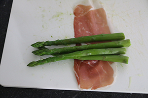
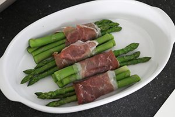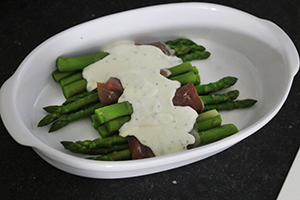
Maak pakketjes van 3 of 3 groene asperges en rol ze in een plak parmaham. Leg ze in een ovenschaal. Giet de kaassaus er over. Bestrooi met de rest van de kaas en wat gehakte hazelnoten. Gratineer de asperges 5 min onder grill tot de kaas iets bruin kleurt.
Origineel
Ingrediënten
- 18 mini mozzarella balletjes (1 zakje)
- 9 cherrytomaatjes
- 9 plakken komkommer
- 3 plakken gerookte zalm (sandwich)
- 3 plakken parmaham
- 1 theelepel zwart sesamzaad
- 1 eetlepel pistache nootjes (gehakt)
MOEILIJKHEIDGRAAD HOLY kusjes
Bereiding
Neem de plakken gerookte zalm en snijd de
drie plakken ieder in drie lange repen.
Neem een mozzarella bolletje en rol er
1 lange reep gerookte zalm omheen. Leg
dit bolletje met zalm op een plak komkommer en prik de prikker erin. Strooi
een beetje zwart sesamzaad over de zalm.
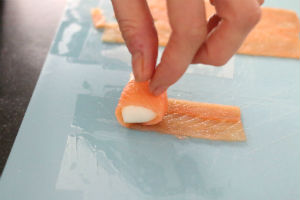
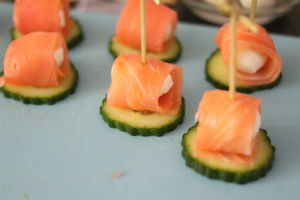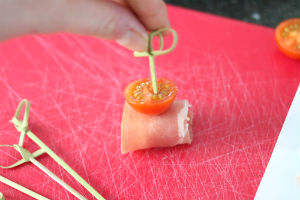
Herhaal dit met de helft van de mozzarella balletjes. Snijd de plakken parmaham ieder in drie lange repen en rol de overige bolletjes mozzarella er in. Halveer de cherrytomaat, leg deze boven de ingerolde balletjes en prik de prikker er doorheen. Verdeel hierover de gehakte pistachenootjes.
Tip: Gebruik sandwich plakken gerookte zalm voor rechte plakken die makkelijk in 3 repen te snijden zijn.
Ingrediënten
- 5 á 6 plakjes hartig taartdeeg
- 1,5 courgette
- 1 wortel (winterpeen)
- 3 eieren
- 1 theelepel tijm
- 1 theelepel oregano
- 3 geroosterde paprika’s
- 125 ml room
- 200 gr brie
- Snuf peper en zout
♨ HOOFDGERECHT ◔ 20 MIN + 35 MIN ⛹ 2 PERSONEN ***
♨ HOOFDGERECHT ◔ 20 MIN + 35 MIN ⛹ 2 PERSONEN ***
Bereiding
Verwarm de oven op 200 graden. Snijd de paprika in plakken en dep deze goed droog met keukenpapier. Snijd met een mandoline of dunschiller plakken van de wortel en courgette. Snijd ook de brie in plakken. Meng in een kom de eieren met de room, tijm, oregano en peper en zout. Bekleed nu de ovenschaal met het hartig taartdeeg door de plakken aan elkaar de maken.
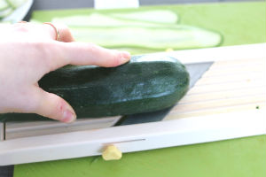
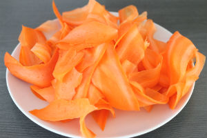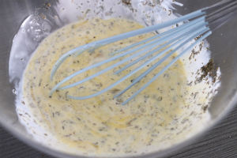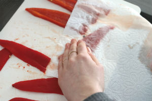
Prik wat gaatjes in het deeg en begin met het toevoegen van de groenten. Eerst rechtop een ronde wortel, dan courgette enzovoorts. Voeg tussendoor een ronde met gegrilde paprika of brie toe. Op het einde worden de cirkels steeds een beetje kleine en voeg je rondjes van de groenten toe. Giet het ei mengsel er overheen en bak nu af in ongeveer 35 minuten in de oven.
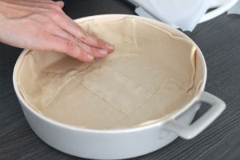
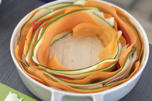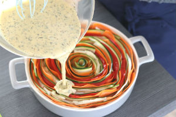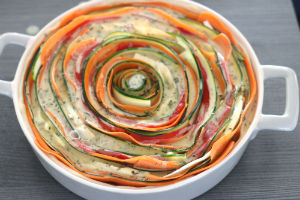
Tip: Varieer met de groenten die je gebruikt zoals met zoete aardappel, gele courgette of aubergine.
Tip: Heb je geen mandoline? Gebruik dan een kaasschaaf of dunschiller om plakken van de groenten te maken.
Origineel
Wil je ons volgen op je telefoontje?
anders recepten.
Over ons:
Als je zo geïnteresseerd bent in ons, of wat dan ook: we zijn natuurlijk niet zo guur dat we geen gegevens verschuilen!
Wil je ons volgen op je telefoontje?
anders recepten.